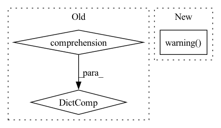

Pattern ID :1387
Before Change
record_from=record_from,
exclude_fields=exclude_fields,
)
metrics_results = {
metric: self.__metrics__.summarize_metric(
dataset=dataset, metric=metric, query=query
)
for metric in metrics or []
}
return SearchResults(
total=results.total,
records=[record_type.parse_obj(r) for r in results.records],After Change
)
metrics_results[metric_id] = metrics
except Exception as ex:
self.__LOGGER__.warning(
"Cannot compute metric [%s]. Error: %s", metric_id, ex
)
metrics_results[metric_id] = {}
return SearchResults(
total=results.total,In pattern: SUPERPATTERN
Frequency: 3
Non-data size: 3
Instances Fragment ID: 6535795
Project Name: recognai/rubrix
Commit Name: 9f2adc97d9958798be52cce5c2dd3e6af264a221
Time: 2022-02-17
Author: francisco@recogn.ai
File Name: src/rubrix/server/tasks/search/service.py
M Class Name: SearchRecordsService
N Class Name: SearchRecordsService
M Method Name: search(9)
N Method Name: search(9)
M Parent Class:
N Parent Class:
M File Name: src/rubrix/server/tasks/search/service.py
N File Name: src/rubrix/server/tasks/search/service.py
M Start Line: 42
M End Line: 76
N Start Line: 45
N End Line: 87
Before Change
enumerate(self._extractor.categories().get(
AnnotationType.label, LabelCategories()).items)
}
target_labels = {
label.name: id for id, label in
enumerate(self._categories[AnnotationType.label].items)
}
id_mapping = {
src_id: target_labels.get(src_label, 0)
for src_id, src_label in source_labels.items()
}After Change
void_labels = [src_label for src_id, src_label in src_labels.items()
if src_label not in dst_labels]
if void_labels:
log.warning( "The following labels are remapped to background: %s" %
", ".join(void_labels))
log.debug("Saving segmentations with the following label mapping: \n%s" %
"\n".join(["//%s "%s" -> //%s "%s"" %
(
src_id, src_label, id_mapping[src_id], Fragment ID: 6535799
Project Name: openvinotoolkit/datumaro
Commit Name: 944e9f9f8ae2b10aea5eff9573e2de65844538c0
Time: 2021-03-10
Author: maxim.zhiltsov@intel.com
File Name: datumaro/plugins/camvid_format.py
M Class Name: CamvidConverter
N Class Name: CamvidConverter
M Method Name: _make_label_id_map(1)
N Method Name: _make_label_id_map(1)
M Parent Class: Converter
N Parent Class: Converter
M File Name: datumaro/plugins/camvid_format.py
N File Name: datumaro/plugins/camvid_format.py
M Start Line: 323
M End Line: 335
N Start Line: 322
N End Line: 340
Before Change
}
else:
relation_to_inverse = {
relation: f"{relation}{INVERSE_SUFFIX}"
for relation in unique_relations
}
inverse_triples = np.stack(
[
triples[:, 2],
np.array([relation_to_inverse[relation] for relation in relations], dtype=np.str),After Change
unique_relations, inverse = np.unique(triples[:, 1], return_inverse=True)
suspected_to_be_inverse_relations = {r for r in unique_relations if r.endswith(INVERSE_SUFFIX)}
if len(suspected_to_be_inverse_relations) > 0:
logger.warning(
f"Some triples already have the inverse relation suffix {INVERSE_SUFFIX}. "
f"Re-creating inverse triples to ensure consistency. You may disable this behaviour by passing "
f"filter_out_candidate_inverse_relations=False",
)
relation_ids_to_remove = [
i
for i, r in enumerate(unique_relations.tolist())
if r in suspected_to_be_inverse_relations Fragment ID: 6535797
Project Name: pykeen/pykeen
Commit Name: a007a273ff146107fd1b0c099d561c7b7279965a
Time: 2020-12-10
Author: berrendorf@dbs.ifi.lmu.de
File Name: src/pykeen/triples/triples_factory.py
M Class Name: TriplesFactory
N Class Name: TriplesFactory
M Method Name: from_labeled_triples(7)
N Method Name: from_labeled_triples(6)
M Parent Class:
N Parent Class:
M File Name: src/pykeen/triples/triples_factory.py
N File Name: src/pykeen/triples/triples_factory.py
M Start Line: 169
M End Line: 222
N Start Line: 269
N End Line: 319